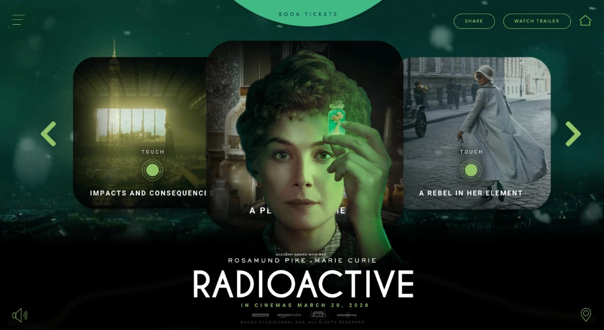
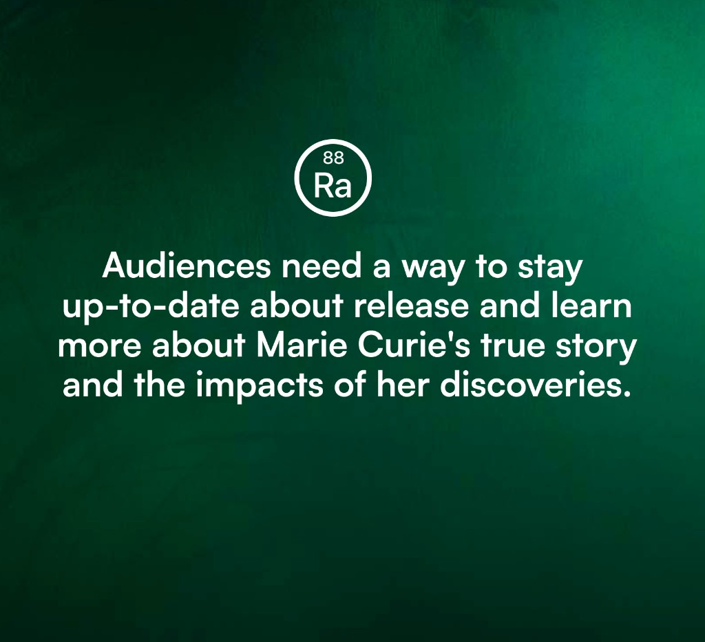
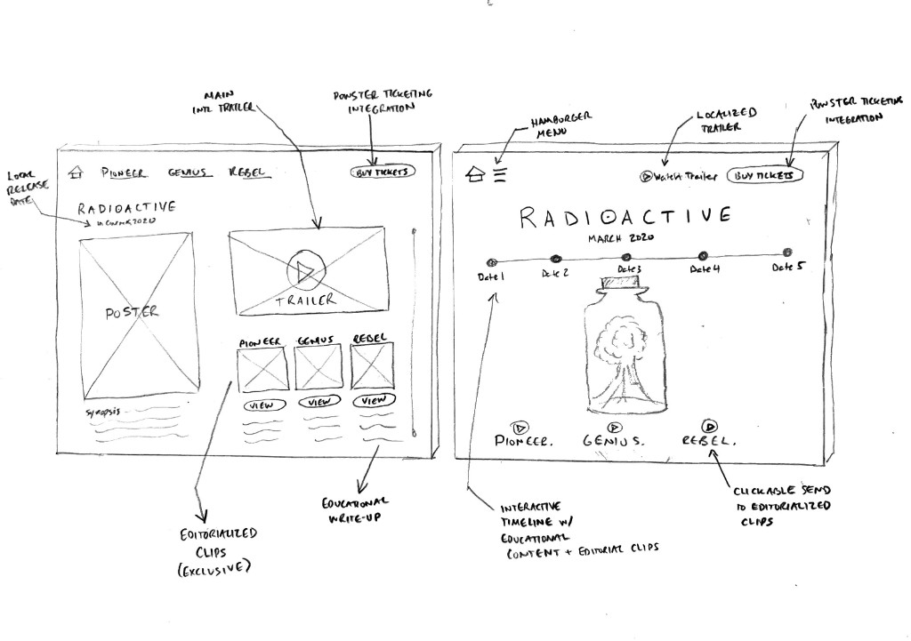
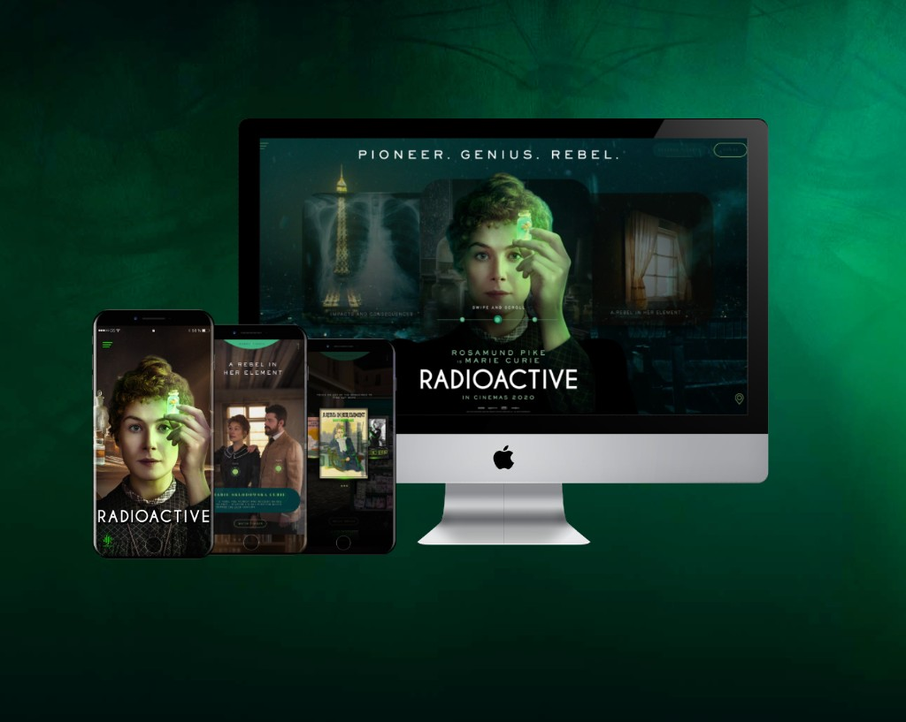

4 minute read
Sustaining audience engagement when a global film launch suddenly disappears

Reimagining a theatrical digital campaign for a world that could no longer go to the movie theater.
Radioactive tells the story of Marie Curie, the pioneering scientist whose discoveries transformed medicine, science, and our understanding of the modern world.
As part of STUDIOCANAL’s international digital team, I was responsible for helping shape the film’s digital campaign experience ahead of its planned worldwide theatrical release.
Then, one month before release, the COVID-19 pandemic shut down cinemas across the globe.
What began as a traditional film marketing challenge quickly became something entirely different:
How do you sustain audience interest and momentum for a film that people suddenly cannot see?
The project became an exploration of how digital experiences can bridge uncertainty, maintain engagement, and continue delivering value when traditional distribution channels disappear overnight.
The context & key questions
In early 2020, Radioactive was preparing for international theatrical release. The campaign’s original objective was straightforward:
- generate awareness
- increase word-of-mouth
- drive ticket sales
- support theatrical attendance
However, as lockdowns spread internationally, release schedules became uncertain and cinema attendance became impossible in many territories. The challenge was no longer simply promoting a film.
Several new questions emerged:
- How do we keep audiences engaged during an indefinite delay?
- How do we continue building anticipation without a release date?
- How can digital channels provide meaningful value beyond traditional marketing content?
- How can we strengthen the emotional connection between audiences and Marie Curie’s story while they wait?
The problem
Traditional film marketing campaigns are designed around a relatively predictable timeline:
Trailer → Awareness → Ticket Purchase → Cinema Release
The pandemic fundamentally broke that model.
Without a clear release path, audiences risked losing interest entirely.

At the same time, Marie Curie’s story offered an opportunity to create a richer experience beyond film promotion alone. Her scientific discoveries continue to influence healthcare, medicine, and modern society today.
The challenge became:
How might we transform a film campaign website into an educational and storytelling destination that keeps audiences engaged, informed, and connected to the film’s themes until release becomes possible?
Research & exploration
The project began with a discovery phase focused on understanding both audience motivations and campaign objectives.
Drawing on:
- audience personas
- focus groups
- test screening feedback
- market research
- existing campaign data
I worked to identify the content and experiences most likely to sustain engagement over an extended period.
One insight quickly emerged:
Insight: Audiences were interested not only in the film itself, but also in the extraordinary true story behind Marie Curie’s scientific legacy.
This shifted the opportunity from pure promotion toward education, storytelling, and deeper engagement.
A working hypothesis guided the project: by providing educational content alongside film marketing, we could maintain audience interest and provide value even if theatrical release dates shifted. This ultimately shaped the direction of the experience.
Product thinking & design decisions
Rather than creating another conventional movie website, the experience was designed as a content-rich destination that could continue delivering value regardless of release timing.
Extending the story beyond the film
The platform explored Marie Curie’s life, discoveries, and cultural impact through educational content designed to complement the film experience. This transformed the website from a promotional asset into an experience capable of standing on its own. The goal was not simply to advertise a film. It was to deepen understanding of the person behind the story.
Balancing marketing and education
One of the central design challenges was balancing commercial objectives with audience value.
The experience combined:
- exclusive film content
- educational resources
- historical context
- character storytelling
- future ticket reservation opportunities
This approach helped maintain campaign objectives while providing users with meaningful reasons to return.
Designing for uncertainty
Unlike most film campaigns, the release timeline could no longer be treated as fixed.
The experience therefore needed to remain relevant regardless of how long audiences might need to wait.
This required a more flexible content strategy that emphasized discovery and learning rather than countdown-driven marketing mechanics.

Iteration & validation
Early concepts were explored through wireframes and prototype development in collaboration with an external agency partner.
Low-fidelity concepts helped evaluate:
- content structure
- storytelling hierarchy
- user journeys
- engagement opportunities
High-fidelity prototypes were then developed and reviewed with internal stakeholders and international distribution partners.
Because of release confidentiality requirements and shifting pandemic conditions, usability testing opportunities were limited compared to a traditional product development process.
However, both internal reviews and targeted user feedback helped validate:
- content discoverability
- narrative clarity
- educational value
- ticket reservation pathways
The iterative process also helped prepare the platform for localization across multiple international markets.

Results & reflection
Launched in
While the unprecedented nature of COVID-19 made traditional campaign performance measurement difficult, the project successfully achieved its primary operational objective: providing audiences with a meaningful destination during a period when theatrical release plans remained uncertain.
The platform was successfully localized and launched across multiple international markets and provided a rich multimedia experience that celebrated Marie Curie’s legacy while maintaining audience engagement with the film.
Reflection
This project reinforced an important lesson about digital product strategy:
The most effective experiences are often those that adapt when the original business assumptions change.
The initial objective was driving theatrical attendance. The reality became maintaining audience connection in a world where cinemas were temporarily inaccessible.
Rather than treating the website as a promotional endpoint, the project evolved into a storytelling platform capable of delivering educational value independent of the film’s release schedule.
It also highlighted the importance of designing for resilience.
When external conditions change unexpectedly, the strongest digital experiences are often those that continue serving user needs even when their original purpose is disrupted.
Presenting Radioactive
Combining historical storytelling, educational content, and film marketing, Radioactive became a digital experience designed to sustain audience engagement during one of the most disruptive periods in modern cinema history. Built around the remarkable life and legacy of Marie Curie, the platform extended the film’s narrative beyond the screen through exclusive multimedia content, educational resources, and seamless pathways to future ticket reservations. More than a promotional website, it became a flexible storytelling destination that helped audiences remain connected to a powerful true story while the world waited for cinemas to reopen.